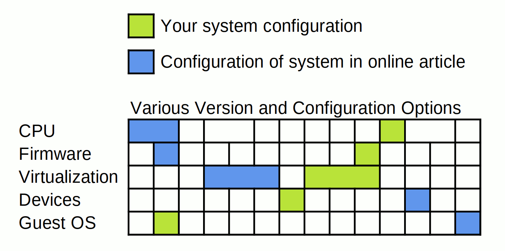

The topic of x86 virtualization and system timing is exceedingly complex.
In the early 2000s, I distinctly remember encountering numerous issues in maintaining accurate timing on x86 virtualization guests. Over the past two decades, many of the main timing issues have been resolved across most use cases and virtualization platforms. While the current situation is not perfect, it has progressed significantly since the earlier days.
When conducting research on system timing and virtualization, it's crucial to recognize that there are numerous layers, each with its own configurations, and these have evolved and changed over the years.
It's almost certain that in any request for information relevant to a particular situation, there will be a need to sift through a lot of information that may not directly apply. Here is a list of the key things that I take into consideration.
- CPU and features
- Kernel version and configuration
- Motherboard features and configuration
- Firmware versions, features, and configuration
- Virtualization platform type, such as KVM, HyperV, VMware, Xen, etc.
- Virtualization platform configuration
- Paravirtualization types and configuration
- Timing requirements
Before deciding to implement any changes based on configuration guides, forum posts, knowledge base articles, etc., ask yourself if the information is relevant to your particular configuration.
For example, if you were to create a matrix (example below) of just a subsection of the various relevant components, versions, and configurations, it is easy to see how difficult it is to determine if a particular piece of information in an article is truly relevant for your configuration.

Some things to check on the Hardware host
Check CPU/TSC support:
$> lscpu | grep -i flags | tr ' ' '\n' | egrep tsc
tsc
rdtscp
constant_tsc
nonstop_tsc
tsc_deadline_timer
Check Kernel Version:
$> uname -a
Linux hostname 5.4.0-171-generic #189-Ubuntu SMP Fri Jan 5 14:23:02 UTC 2024 x86_64 x86_64 x86_64 GNU/Linux
Check Bios:
$> dmidecode -s bios-vedor
Buggy-Never-Updated-Bios-Co
$> dmidecode -s bios-version
0.0.0.01 Beta
$> dmidecode -s bios-release-date
01/01/300 BC
Check KVM version
$> /usr/bin/qemu-system-x86_64 --version
QEMU emulator version 4.2.1 (Debian 1:4.2-3ubuntu6.28)
Checking the current value in the TSC (usually not necessary)
$> ./rdtsc.o
TSC value: 56659346945284
Check the system time and keep track of any drift
There are many different tools and methods to check and keep track of the time. For example..
$> date
$> chronyd -Q "server ntp.ubunutu.com iburst"
$> sntp -K /dev/null ntp.ubuntu.com
Some things to check on the VM Guests
KVM Guest 1
$> uname -a
Linux kvm-guest-1 4.15.0-142-generic #146~16.04.1-Ubuntu SMP Tue Apr 13 09:27:15 UTC 2021 x86_64 x86_64 x86_64 GNU/Linux
$> cat /sys/devices/system/clocksource/clocksource0/- available_clocksource
kvm-clock tsc acpi_pm
$> cat /sys/devices/system/clocksource/clocksource0/current_clocksource
kvm-clock
$> lscpu | grep -i flags | tr ' ' '\n' | egrep tsc
tsc
rdtscp
constant_tsc
tsc_known_freq
tsc_deadline_timer
tsc_adjust
(Checking the TSC is usually not necessary)
$> ./rdtsc.o
TSC value: 3170121449948
KVM Guest 2
$> uname -a
Linux kvm-guest-2 6.5.0-10-generic #10-Ubuntu SMP PREEMPT_DYNAMIC Fri Oct 13 13:49:38 UTC 2023 x86_64 x86_64 x86_64 GNU/Linux
$> cat /sys/devices/system/clocksource/clocksource0/available_clocksource
kvm-clock tsc acpi_pm
$> cat /sys/devices/system/clocksource/clocksource0/current_clocksource
kvm-clock
$> lscpu | grep -i flags | tr ' ' '\n' | egrep tsc
tsc
rdtscp
constant_tsc
tsc_known_freq
tsc_deadline_timer
tsc_adjust
(Checking the TSC is usually not necessary)
$> ./rdtsc.o
TSC value: 25459753247756